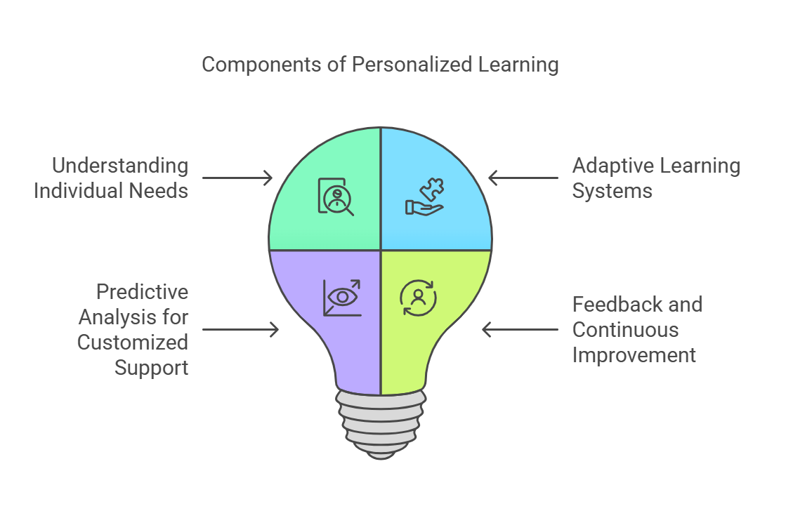

With the digital revolution taking over the education sector, it's no surprise that the role of artificial intelligence in higher education has become a focal point of discussion.
The integration of AI in higher education and the application of data analytics in higher education are opening doors to improved learning experiences, streamlined administrative processes, and enhanced student engagement.
In this blog post, we'll delve deep into the influence of AI and data analytics in the educational realm and discuss how technologies such as VR for higher education and the emerging metaverse are contributing to this transformation.
Personalized Learning Environments

The biggest asset AI brings to the table is personalization. Through data analytics in higher education, institutions can now offer personalized learning paths for students. These paths consider individual learning styles, pace, and preferences.
As a result, educators can predict areas where students might struggle and offer tailored resources to help them. It is explained as under:
☑️ Understanding Individual Needs
Using data analytics in higher education, it's now possible to gain a comprehensive understanding of each student's unique learning profile. This encompasses not just what they're learning, but how they're learning.
By analyzing data points ranging from quiz scores and assignment submissions to online activity and forum participation, AI can discern patterns and preferences in a student's learning journey.
☑️ Adaptive Learning Systems
One of the most potent examples of AI in higher education is adaptive learning systems.
These platforms adjust in real-time to a student's performance and engagement level. If a student is excelling in a particular topic, the system might offer advanced materials or challenge them with more complex tasks.
Conversely, if they're struggling, the system can provide supplementary resources or revert to foundational concepts to ensure a solid understanding.
☑️ Predictive Analysis for Customized Support
Beyond just real-time adjustments, AI can also forecast potential challenges a student might face.
By analyzing a student's historical data and comparing it with broader trends, the technology can preemptively identify topics or skills that might pose difficulties. Educators, armed with this predictive insight, can proactively offer tailored resources, tutorials, or additional support, ensuring that every student gets the assistance they need when they need it.
☑️ Feedback and Continuous Improvement
A truly personalized learning environment doesn't just adapt, instead, it evolves.
As students interact with AI-driven platforms, these systems continually refine their algorithms based on feedback and results. This ensures that the learning experience is not static but continually improving, staying aligned with a student's changing needs and academic goals.
Automating Administrative Tasks
The role of artificial intelligence in higher education isn't limited to the direct learning experience. Beyond the classroom, AI plays a transformative role in simplifying and streamlining various administrative processes, making institutions more efficient and responsive to student needs.
☑️ Chatbots and Virtual Assistants
Modern students, being digital natives, often expect instant responses to their queries.
Chatbots are AI-driven virtual assistants that are available 24/7, providing quick answers to frequently asked questions related to admissions, course details, campus facilities, and more.
They're not just reactive but proactive too.
For instance, chatbots can send reminders about assignment deadlines, fee submissions, or upcoming events.
By handling these routine inquiries, chatbots free up human resources to address more complex, nuanced issues, ensuring students receive comprehensive support.
☑️ Smart Scheduling and Resource Allocation
Scheduling classes, allocating rooms, and ensuring resources are optimally utilized can be a complex puzzle.
AI-driven software can analyze multiple variables – from faculty availability and student preferences to classroom capacities and equipment requirements – to craft schedules that minimize conflicts and maximize resource utilization.
This ensures a smoother academic operation, leading to fewer logistical challenges and a better learning experience for students.
☑️ Streamlining Admissions and Data Management
Admissions processes can be overwhelming, with institutions receiving thousands of applications, each accompanied by a plethora of documents.
AI can simplify this by automatically sorting, categorizing, and analyzing these applications to highlight the most promising candidates based on the institution's criteria. This not only speeds up the admission process but also ensures a more objective, data-driven selection.
Moreover, AI can manage vast student databases, update records in real time, flag inconsistencies, and ensure data accuracy. This means educational institutions can get a more precise, up-to-date snapshot of their student demographics, performance metrics, and more, aiding in decision-making.
☑️ Predictive Maintenance of Campus Infrastructure
By leveraging AI, institutions can predict when their infrastructure might need maintenance. For example, using sensors and data analytics, they can forecast when a projector is about to fail or when an HVAC system might need servicing. This proactive approach minimizes disruptions and ensures that campus facilities are always in peak condition.
☑️ The Convergence with Other Technologies
Edtech in enhancing higher education is not just about standalone technologies, instead, it's about their convergence. When AI's administrative capabilities are combined with VR for higher education or immersive technologies in higher education, institutions can craft a comprehensive, integrated digital experience.
Imagine a scenario where a student, after interacting with a chatbot, is instantly directed to a VR training module tailored to their current subject.
Yes, the possibilities are endless.
Enhancing Student Engagement
The power of data analytics in higher education shines brightest when it comes to maintaining and elevating student engagement. By tapping into this reservoir of insights, institutions can proactively address potential issues before they evolve into substantial challenges.
☑️ Predictive Analysis for Engagement Patterns
At the heart of data analytics lies the capability for predictive modeling.
This involves the process of analyzing historical data to forecast future outcomes. In the context of student engagement, predictive models can identify patterns that indicate a decline in a student's involvement or attention. These patterns might manifest as reduced participation in online discussions, inconsistent attendance, sporadic assignment submissions, or a sudden dip in grades.
☑️ Holistic View of Student Activity
Data analytics doesn't just focus on academic performance. It offers a 360-degree view of a student's engagement.
By evaluating various touchpoints like their activity on learning management systems, interaction with online resources, and even feedback provided on course evaluations, institutions can get a comprehensive picture of a student's academic journey.
Such a holistic approach ensures that no potential signs of disengagement go unnoticed.
☑️ Timely Interventions
This might involve one-on-one counseling sessions, peer mentoring, or providing additional resources such as tutorials or supplementary reading. For instance, if a student is struggling with a particular topic, they could be directed to VR training in a higher education module that offers an immersive, hands-on understanding of that subject.
☑️ Feedback Loops and Continuous Improvement
Another advantage of using data analytics for enhancing engagement is the feedback loop it creates.
Institutions can continuously monitor the effectiveness of their intervention strategies and refine them based on real-world results. For example, if a particular resource like a metaverse in a higher education module consistently improves engagement, it can be integrated more deeply into the curriculum.
The Bigger Picture: Integration with AI and Other Technologies
As with all facets of edtech in enhancing higher education, integration amplifies the benefits.
When data analytics is paired with the role of artificial intelligence in higher education, the predictive capabilities become even more potent. AI can sift through vast amounts of data faster and more accurately than traditional methods, allowing for real-time interventions.
☑️ Immersive Learning with VR and the Metaverse
The integration of edtech in enhancing higher education is not just about new tools but about crafting a new ecosystem of learning, and here is where immersive technologies like Virtual Reality (VR) and the metaverse make a defining impact.
 Get the App from Meta Store: Download Now
Get the App from Meta Store: Download Now
☑️ VR: Beyond Traditional Boundaries
VR training in higher education has surpassed the conventional classroom limits, offering students experiential learning environments. Imagine a medical student exploring the intricate structures of the human heart from all angles in a three-dimensional space or an archaeology student visiting ancient civilizations, walking amidst historically accurate recreations of cities, all from the safety and comfort of their classroom. This is the power of VR – turning theoretical concepts into tangible experiences.
It's not just about the 'wow' factor.
Research has shown that VR enhances retention and comprehension. By providing a more interactive and engaging way of learning, VR addresses various learning styles. Kinesthetic learners, who learn by doing, particularly benefit from these immersive experiences.
☑️ The Metaverse: The Next Evolution in Digital Learning
While VR offers individual immersive experiences, the metaverse in higher education is poised to redefine collaborative learning. Think of it as a vast, interconnected digital universe, encompassing various virtual worlds and spaces. In this expansive digital realm, students from around the world can collaborate, learn, experiment, and socialize, all in real-time.
The metaverse offers various applications for higher education:
● Global Classrooms: Institutions can host lectures, seminars, or workshops in virtual spaces, accessible to students from any corner of the world. This not only democratizes access to quality education but also promotes intercultural exchanges.
● Virtual Labs and Simulations: Particularly beneficial for disciplines where physical resources or labs might be limited, the metaverse can offer virtual counterparts where students can experiment, make mistakes, and learn without real-world consequences.
● Collaborative Projects: Students can work together on group assignments, brainstorm in virtual meeting rooms, or even design and construct projects within the metaverse, harnessing its vast array of tools and resources.
● Networking and Career Fairs: The metaverse can also be an avenue for students to network with professionals, alumni, and potential employers in virtual career fairs or industry seminars.
☑️ Integration with AI and Data Analytics
The immersive nature of VR and the metaverse becomes even more potent when combined with AI and data analytics in higher education. While students interact in these virtual spaces, their actions, queries, and interactions can be analyzed to provide insights into their learning patterns, areas of interest, and potential areas of struggle.
This data can then inform educators and institutions about potential improvements, course corrections, and personalization opportunities.
Data-Driven Decision Making
Institutions can leverage AI and data analytics to make informed decisions. Whether it's about course offerings, faculty recruitment, or infrastructure investments, the insights provided by AI can guide institutions in aligning their strategies with student needs and industry demands.
☑️ Optimizing Course Offerings
By analyzing trends in student enrolments, performance metrics, and feedback, institutions can tailor their course offerings to meet the evolving demands of the student body.
For instance, if data indicates a rising interest in a particular interdisciplinary field, a university might consider launching a specialized course or even a full-fledged degree program in that area.
☑️ Faculty Recruitment and Development
Recruiting the right faculty is critical for any educational institution.
AI-driven analysis can help in identifying gaps in expertise or areas where the institution can expand based on student interests. Furthermore, by analyzing student feedback and performance data, institutions can support existing faculty with targeted professional development opportunities.
☑️ Infrastructure and Resource Allocation
Efficiently allocating resources is crucial for the smooth operation of any institution. Through AI and data analytics, universities can forecast needs for classroom spaces, labs, or other facilities.
For instance, if data analytics suggests a surge in students opting for virtual classes or requiring VR setups for certain courses, the institution can redirect investments toward enhancing digital infrastructure rather than physical classroom spaces.
☑️ Student Retention and Success
Predictive analytics can identify students at risk of dropping out or those who might face academic challenges.
By recognizing these patterns early, institutions can provide timely interventions, be it through additional tutoring, counseling, or financial aid.
☑️ Engaging with Alumni and Stakeholders
AI can help institutions understand alumni engagement patterns, donations, and involvement, enabling them to tailor their outreach and engagement strategies. This ensures that alumni feel connected, and valued, and are more likely to contribute back, both in terms of expertise and resources.
☑️ Adapting to Industry Needs
Higher education institutions must prepare students for the real world. AI and data analytics can provide insights into industry trends, job market demands, and emerging sectors. By aligning their curriculum and programs to these insights, institutions ensure their graduates are not just job-ready but are primed for leadership roles in their respective fields.
Challenges and The Road Ahead
While the benefits are numerous, challenges persist. Data privacy, the digital divide, and resistance to change are just some of the hurdles in the complete adoption of AI and tech tools in academia. However, with collaborative efforts, continuous innovation, and a focus on inclusive education, the future looks promising.
☑️ Data Privacy Concerns
In an era where data has become a new currency, its protection is paramount. With the widespread adoption of AI and Data Analytics, educational institutions gather vast amounts of student data.
This raises concerns about who has access to this data, how it's used, and the potential for misuse. Institutions must adhere to strict data privacy regulations and ensure robust cybersecurity measures to protect students' personal information.
☑️ The Digital Divide
The rapid progression of technology has inadvertently widened the gap between those with access to digital resources and those without. Not every student has the necessary hardware, internet connectivity, or even the digital literacy to harness the full potential of AI-driven platforms.
To ensure equitable access to education, there's an urgent need to bridge this divide.
☑️ Resistance to Change
Humans, by nature, are creatures of habit. For some educators and administrators, the transition from traditional teaching methodologies to AI-enhanced platforms can be daunting.
This reluctance is compounded by concerns about the potential loss of the 'human touch' in teaching and the perception that technology might overshadow the essential human aspects of education.
☑️ Financial Constraints
Implementation of advanced AI systems and Data Analytics tools can be costly. Not all institutions, especially those in resource-limited settings, can afford to integrate these technologies seamlessly.
Ethical Implications
There's a growing debate about the ethical ramifications of using AI in education. Questions arise about algorithmic biases, the potential for AI to make decisions that might adversely affect students, and the broader societal implications of an AI-driven educational system.
Conclusion
The role of artificial intelligence in higher education is multifaceted and transformative. With AI in higher education, institutions are not only streamlining their processes but also enhancing the learning experience for students. Data analytics in higher education is aiding in creating a more engaged, personalized, and effective learning environment.
As ed-tech in enhancing higher education continues to evolve, integrating VR for higher education, immersive technologies, and concepts like the metaverse will further redefine the boundaries of what's possible in academia.
For those looking for concrete examples of AI in higher education, the landscape is rich with institutions, educators, and technologists pushing the envelope every day. The journey is just beginning, and the road ahead promises even more innovation and transformation.